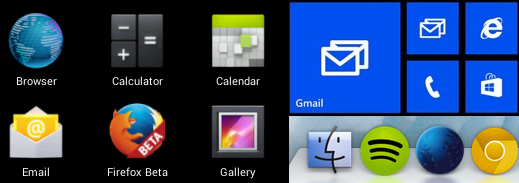
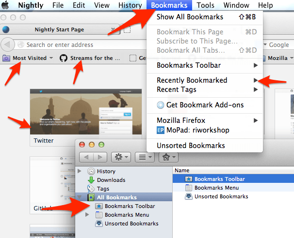
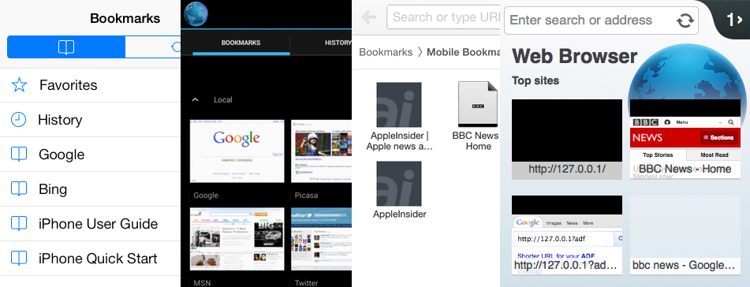
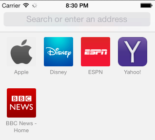
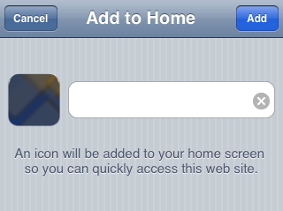
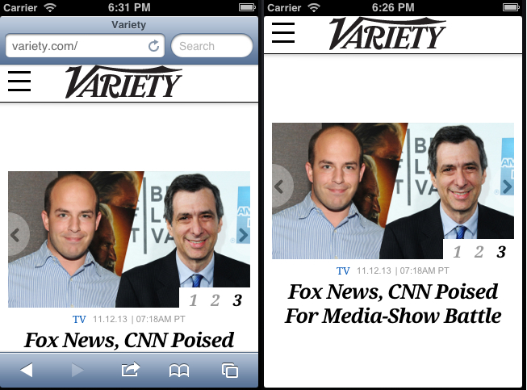
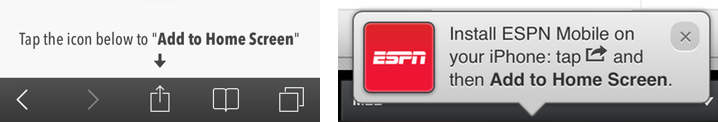
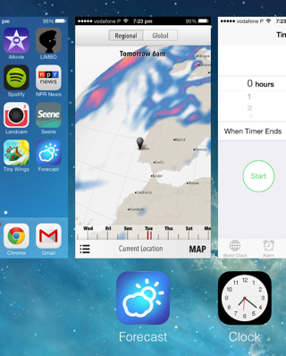
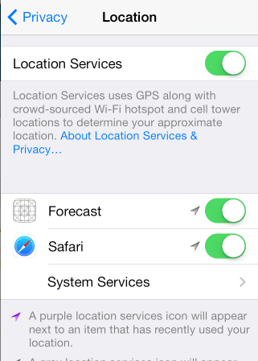

This document provides a historical over view of how web applications
have started to be integrated into native application environments, and
outlines the use cases and requirements for a standard that could allow
users to "install" web applications. The use cases and requirements
were gathered by examining the landscape of proprietary solutions, and,
where possible, by gathering statistics about the prevalence and usage
patterns of particular solutions used in the wild. Proprietary
solutions that integrate web applications into the underlying operating
system have been used in the wild for a few years now, so consolidation
towards a standardized solution could potentially benefit users,
developers, and browser vendors.
This document is undergoing heavy revision. If you have any thoughts or
comments about the content, please either join the public-webmob
mailing list or file a
bug on GitHub. All contributions welcome.
Introduction
To launch native applications on either a desktop-class machine or a
mobile device, users are generally presented with icons and
corresponding labels that represent the applications installed on their
system. Having the icons of web applications appear amongst
applications that the user considers native (e.g., those on the home
screen of a device) gives the perception to users that a web
application has been "installed" - even if the processes that go into
actually "installing" a web application differ from those of a native
application.

Some application icons of Android 4.3, Windows Phone 7, and Mac OS
Mavericks.
At the time of writing, the web platform lacks a standardized means for
a web application to indicate that it can be "installed" and treated as
if it were an native application. As this document will show, the web
platform also lacks sufficient metadata for a Web application to be
successfully integrated into an operating system in the same way native
applications are (i.e., not just on the homescreen, but integration
into other contexts such as the task switcher, privacy and security
settings, etc.).
Because of this gap in the web platform, browser vendors, including
Google, Apple, Microsoft, and Mozilla, have implemented proprietary
solutions that allow users to add web applications to the homescreen.
To achieve this integration, developers use proprietary opt-in
mechanisms, which we will discuss later, to indicate to the browser
that the web application can potentially work as a stand-alone
application once it's added to the homescreen. These opt-in mechanisms
also provide metadata (e.g., the icons and name of the application)
that allows web browsers to add a web application to the homescreen so
to appear indistinguishable from an application that is natively
installed.
From bookmarks to installed web apps
To access a web application, users traditionally opened up a web
browser, typed a URL or a search query into a search box, and had the
browser navigate to the web application they wanted. Alternatively, a
user may have "bookmarked" within a Web browser a set of web documents
or web applications they commonly access.
More recently, browsers have started to monitor user's browsing habits
to intelligently deduce which are the most common web sites the user
likes to visit (i.e., a type of automatic bookmarking). The browser
will then present visual links to those sites. Depending on the
browser, user-defined and automatically-gleaned bookmarks will appear
as a list of document titles or file names in either a drop-down menu,
"speed-dial" cells, a toolbar, and/or a dedicated application window or
tab. All these bookmark types are illustrated below.

There are at least six different ways to access bookmarks in a
desktop-based browser. Some of those bookmarks are derived
dynamically by monitoring user's browsing habits, such as the most
visited sites and "speed dial" entries the user sees when they open
a new tab.
Bookmarking on mobile browsers
On mobile devices, the interaction model has traditionally been the
same as the one described above: there has historically been a clear
distinction between opening a native application and accessing a Web
application. That is, the user needs to first locate the Web browser
they want to use, launch it, and then either type-in a URL or use a
bookmark to access a Web application. Web browsers that run on mobile
operating systems have thus had to add similar bookmarking facilities
as those found in desktop-class browsers, as shown below.

The bookmarking facilities of mobile browsers closely resemble
those of desktop-browsers - providing both a traditional list of
bookmarks as well as a "speed dial" that can contain either
automatically gleaned bookmarks or user-configured ones.
Having bookmarking facilities in mobile browsers helps reduce some of
the burden associated with having to type URLs. Particularly for
sites that the user visits regularly, it means that a web site can be
accessed by a single press. Additionally, bookmarking facilities help
separate locally installed applications from web sites the user needs
to access for other reasons (e.g., a particular wiki page on an
intranet, a document with commonly used information, etc.).
Limitations of bookmarking: multiple home screens
Because bookmarks contain links to a range of different types of
resources, the bookmarking facilities of desktop and mobile browsers
do not integrate into an operating system's application menu. This
means that web applications and "native" applications are treated as
different things. This separation makes sense for many kinds of web
sites (e.g., static, informational ones that provide little other
functionality), but there is a range of applications that can provide
an experience that is analogous to that provided by an application
installed locally on a user's device (e.g., a game, an office
productivity suite, a news or social networking site, a currency
converter or photo manipulation utility, etc.).
As shown below, this desire to treat websites as applications has led
at least one browser maker to attempt to replicate the homescreen
experience directly in the browser itself.

In iOS 7's Safari web browser, the default tab view presents icons
derived from websites to create what is, in effect, a second
homescreen - image on the left. This can be clearly seen when
contrasted with the actual iOS 7 homescreen -image on the right.
Google Chrome's browser, although not shown here, does the same
thing in iOS: it presents bookmarked pages as a grid of icons.
Although this is a convenient way to access web sites, there are web
applications that would benefit users if they could be directly
available from the primary home screen. Also relegating web
applications to this second homescreen means that web applications
are treated as "second-class citizens": in the sense that in order to
access these applications, a user must first launch the correct
browser (from potentially a range of different browsers), and then
press the icon for the application they wish to load.
Add to homescreen
Ideally, web applications should be immediately available to users,
without them needing to launch a separate application (a web browser)
and having to type a URL. And application may be found through browsing
the web (e.g., through a search engine or through a website that works
as an "app store"), but once "installed", it should be functionally
indistinguishable from a native application.
Browser makers have long acknowledged this as something users would
want: iOS's Safari has had the capability to add a website to the
homescreen since early 2008 (as of version 1.1.3, as shown in the
figure below); the Android's stock browser has provided the capability
to "add to homescreen" since at least 2009 - though the process of
adding to website to the homescreen was significantly more convoluted.

iOS's Safari has almost always provided a way for users to add
websites to the home screen of the device. Once the use presses
"add", the icon for the Web application is placed along side other
native application icons.
The ability to add a web site to the homescreen didn't automatically
make a web application look, feel, or integrate into the operating
system in the same way as native applications did. For instance,
originally in iOS, launching a web application that had been added to
the homescreen took the user back into Safari. It was only with the
release of iOS 2.2 in September 2008 that applications that had been
added to the home screen gained the capability to be displayed full
screen (doing away with Safari's application chrome, shown below).

A side-by-side comparison of a web application running in Safari next
to the same application added to the homescreen, on the left and
right respectively. Note that for the installed web application on
the right, browser chrome, including the navigation buttons, ability
to bookmark, and the URL and search bar, have all been removed.
From fancy bookmark to installed webapp
What initially started as a way to simply add a link to a website
from iOS's homescreen has incrementally evolved to diminish the
functional differences between a web application and a native
application. This has not happened on the OS level alone: progress on
the web platform, such as the ability to make content available
off-line, performance gains through hardware acceleration, and
integration with native form controls, has assisted in diminishing
these differences.
However, tighter integration between web applications and the
underlying operating system has meant that applications that are
added to the homescreen behave differently to those accessed directly
through a web browser. There are also areas where native applications
remain distinct, by having capabilities that are not accessible to
installed web applications.
Key components of the installed application experience
In order for a web application to be "installed" in such a way that
it provides a user experience that is indistinguishable from that of
a native application, a number of key things are needed:
Name(s):
The ability for a user to find an application through its name(s).
Some OSs allow native applications to be found by using multiple
names. Web applications, because of HTML's origin as a
document-publishing format, have a "title" and these titles are
applied "per page" basis using HTML's <title> element.
Icons:
The graphical representations that represent the application in
various contexts (primarily, an icon that functions as an
application's unique identifier amongst a list of installed
applications), but also in other contexts - such as settings
screen. Because of the various contexts that a native application's
icon can appear in an OS, native applications typically need to
provide a large range of icons at different sizes and, more
recently, specifically targeted at different device pixel
densities.
Orientation:
Applications, such as games, require that they be started in a
particular orientation to function effectively. Web applications
are generally designed using responsive web design techniques,
which means [???]
Self awareness:
The applications is aware through script that it was launched
"standalone", rather than in the context of a Web browser. This
differs from native applications, which always run stand alone.
Start page:
As an web application can be added to the homescreen at any point
the user desires.
Security:
Different cookie jar. Is it blank slate? are cookies copied over?
webSQL data?
Privacy:
Integration with privacy settings at the OS level.
Navigation:
Navigation refer to the ability for an installed web application to
allow users to follow hyperlinks.
UI behavior:
Turning off things that can and can't be selected, etc.

The figure shows web applications that asks the end-user to add the
web application to the homescreen. On the left forecast.io and ESPN on the right.
When users add a web application to the home screen and the web
application is launched, the OS can automatically integrate the web
application into facilities like the task switcher. As can be seen in
the figure below, this makes the distinction between a native
application and a web application negligible from an OS-integration
perspective.

The figure shows how the Forecast web application integrates
with iOS 7's task switcher. Note also the web application's launch
icon is indistinguishable from those of other applications.
Names
Native applications can have multiple names. Because of this, you can
find them in multiple ways.
Web applications get their names from the <title>. This is
annoying. It means constantly having to fix the name when you add to
home screen.
HTML5 provides a soluton, "application-name":
ddd
HTML5 limits this to 1 name:
HTML says:
The value must be a short free-form string giving the name of the Web
application that the page represents. If the page is not a Web
application, the application-name metadata name must not be used.
There must not be more than one meta element with its name attribute
set to the value application-name per document. User agents may use
the application name in UI in preference to the page's title, since
the title might include status messages and the like relevant to the
status of the page at a particular moment in time instead of just
being the name of the application.
Support in browsers: Internet Explorer
In the October dataset,
there were 1629 sites using this string. The search query used:
Native applications have lots of icons. iOS uses xxx many. Android
needs yyy many.
Web applicaions have traditionally only used 1 (favicon).
Icons on native platforms need to be designed for multiple desities -
not just resolutions.
Security and privacy
The act of adding an application to the home screen serves as a cue to
alter the security policy of an application. For example, in iOS, and
application that has been added to the home screen will no longer share
cookies, localStorage, IDB, etc. with the Safari Web browser. The OS
will also reset all its API permissions, so, for example, any
previously granted permission to access location services that occured
in the browser are forgotten once the application is added to the
homescreen - the end-user willneed to re-enable such permission again
after the application is launched from the homescreen.
Furthermore, by adding the application to the home screen, the
application gains its own independent privacy settings in iOS's privacy
menus. This is shown in the figure below.

iOS privacy settings for location services. Shown is Forecast, which
is an installed web application as well as the Safari Web browser.
Here, users can disable the . More importantly, disabling location
services for the Web browser does not affect the ability of Forecast
to access location services.
Start page
A user can add a web application to the home screen from anywhere
within a website (e.g., while reading a document). Returning to that
same document when the applicaiton starts back up might not be ideally
what either the user or developer want.